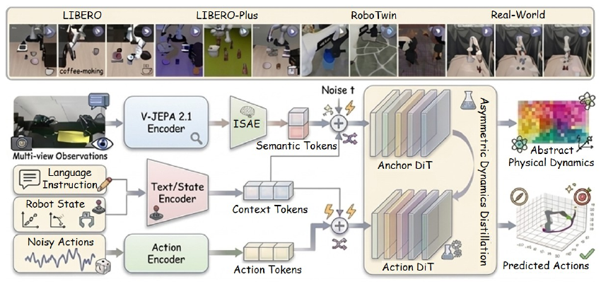
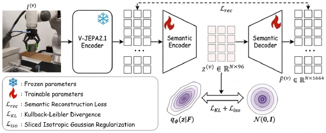
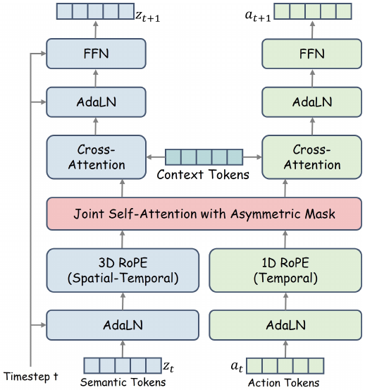
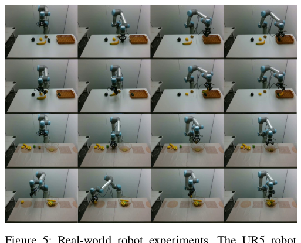

World Action Models (WAMs) have emerged as a powerful paradigm for embodied intelligence, yet the prevailing reliance on pixel-level video generation creates a fundamental bottleneck. Forcing models to reconstruct task-irrelevant visual details dissipates representational capacity and renders policies vulnerable to visual distractors.
We propose LeapBot-WA, which establishes a novel Predictive-Latent paradigm for WAMs by operationalizing the Joint-Embedding Predictive Architecture (JEPA) as a World-Anchor. Departing from the traditional reliance on visual synthesis, LeapBot-WA shifts the core of world modeling to Predictive Semantic Alignment, extracting abstract physical dynamics directly within a latent foundation space. To bridge the modality gap between non-Gaussian predictive features and diffusion priors, we introduce the Isotropic Semantic Autoencoder (ISAE), which reshapes the anchor's latent space into a diffusion-friendly manifold to prevent off-manifold drift. Furthermore, we design an Asymmetric Mixture-of-Transformers (MoT) architecture. During training, an Anchor Diffusion Transformer acts as a privileged dynamics expert to guide the Action Diffusion Transformer; at inference, this heavy dynamics branch is pruned, enabling zero-overhead execution.
LeapBot-WA achieves state-of-the-art performance among predictive models on LIBERO and matches top-tier generative WAMs on RoboTwin 2.0 without requiring large-scale trajectory pre-training. It further demonstrates superior zero-shot robustness to unseen environments and successful real-world transfer.
Moving world modeling from pixel rendering to predictive semantic alignment in a latent foundation space.
JEPA features serve as a World-Anchor that captures abstract physical dynamics of the scene — no pixel-level video generation, no reconstruction of textures, shadows, or background appearance.
ISAE compresses frozen JEPA features into a compact 96-dim isotropic latent manifold suited to diffusion, with SIGReg enforcing Gaussian geometry and preventing off-manifold drift.
An Anchor DiT acts as a privileged dynamics expert during training, distilling intent-driven physical priors into the Action DiT through asymmetric masked attention.
The heavy dynamics branch is pruned at deployment: semantic tokens are cached once from the current observation, so the Action DiT runs at 546 ms with 2.9B parameters.
A predictive-latent world-action model: JEPA anchors physical dynamics, ISAE bridges to diffusion, and an asymmetric MoT distills dynamics into action.

Fig. 1. Overview of LeapBot-WA. Visual observations are processed by a Predictive Anchor (fine-tuned JEPA) and compressed by an ISAE into a diffusion-friendly latent space. During joint flow-matching, an Asymmetric MoT decouples world modeling from policy execution: the Anchor DiT predicts semantic evolution and distills these dynamics into the Action DiT via asymmetric masked attention. The heavy dynamics branch is omitted at inference for zero-overhead execution.

Fig. 2. ISAE architecture. The semantic autoencoder compresses and reconstructs frozen JEPA features to preserve predictive structures, while joint regularization (KL + SIGReg) reshapes the non-Gaussian posterior into an isotropic Gaussian prior for downstream diffusion.

Fig. 3. Asymmetric MoT denoising. The Anchor DiT is prevented from attending to action tokens, while the Action DiT attends to both action and semantic representations through asymmetric masked attention.
Simulation rollouts across three benchmarks and pick-and-place on a real UR5 arm.
UR5 pick-and-place across diverse fruits and containers under unconstrained lighting and table textures.
Simulated manipulation with external and wrist camera views.
Manipulation under systematic visual perturbations — camera, lighting, background, and layout shifts.
Multi-view dual-arm manipulation in simulation across 50 tasks.
State-of-the-art among predictive WAMs on LIBERO, matching top-tier generative WAMs on RoboTwin 2.0 — all without large-scale trajectory pre-training.
| Method | Category | Spatial | Object | Goal | LIBERO-10 | Avg. |
|---|---|---|---|---|---|---|
| VLAs | ||||||
| UniVLA | VLA | 96.5 | 96.8 | 95.6 | 92.0 | 95.2 |
| OpenVLA-OFT | VLA | 97.6 | 98.4 | 97.9 | 94.5 | 97.1 |
| π0 | VLA | 96.8 | 98.8 | 95.8 | 85.2 | 94.2 |
| π0.5 | VLA | 98.8 | 98.2 | 98.0 | 92.4 | 96.9 |
| X-VLA | VLA | 98.2 | 98.6 | 97.8 | 97.6 | 98.1 |
| Pixel-Space WAMs | ||||||
| Fast-WAM | Gen. | 98.2 | 100.0 | 97.0 | 95.2 | 97.6 |
| Motus | Gen. | 96.8 | 99.8 | 96.6 | 97.6 | 97.7 |
| ImageWAM | Gen. | 97.2 | 99.2 | 98.8 | 98.4 | 98.4 |
| Lingbot-VA | Gen. | 98.5 | 99.6 | 97.2 | 98.5 | 98.5 |
| Cosmos-Policy | Gen. | 97.6 | 98.2 | 100.0 | 98.1 | 98.5 |
| Latent-Space WAMs | ||||||
| JEPA-VLA | Pred. | 97.2 | 98.0 | 95.6 | 94.8 | 96.4 |
| PALM | Pred. | 95.2 | 96.7 | 94.3 | 91.8 | 94.5 |
| VLA-JEPA | Pred. | 94.8 | 99.6 | 95.8 | 94.0 | 96.1 |
| LeapBot-WA | Pred. | 96.2 | 99.6 | 97.6 | 95.6 | 97.3 |
Bold marks the top performance within the predictive (latent-space WAM) category. LeapBot-WA leads all predictive models while remaining competitive with substantially heavier generative WAMs.
| Model | Embodied PT | Clean | Randomized | Avg. |
|---|---|---|---|---|
| VLAs | ||||
| π0 | ✓ | 65.90 | 58.40 | 62.15 |
| X-VLA | ✓ | 72.80 | 72.84 | 72.82 |
| π0.5 | ✓ | 82.70 | 76.80 | 79.75 |
| ABot-M0 | ✓ | 86.06 | 85.08 | 85.57 |
| Qwen-VLA | ✓ | 86.10 | 87.20 | 86.65 |
| HoloBrain-0 | ✓ | 91.90 | 92.30 | 92.10 |
| AttenA+ | ✓ | 93.10 | 91.90 | 92.50 |
| Qwen-RobotManip | ✓ | 93.70 | 94.00 | 93.85 |
| WAMs | ||||
| JEPA-VLA | ✗ | 73.50 | 17.70 | 45.60 |
| Being-H0.7 | ✓ | 90.20 | 89.60 | 89.90 |
| Fast-WAM | ✗ | 91.90 | 91.80 | 91.85 |
| Lingbot-VA | ✓ | 92.93 | 91.55 | 92.24 |
| LeapBot-WA | ✗ | 91.04 | 92.48 | 91.76 |
Trained on 27.5K clean + randomized demonstrations. Without any large-scale robot trajectory pre-training (✗), LeapBot-WA sets a new state of the art among WAMs in the randomized setting (92.48%) and surpasses heavily pre-trained VLA baselines.
| Method | Camera | Robot | Language | Light | Background | Noise | Layout | Avg. |
|---|---|---|---|---|---|---|---|---|
| Fast-WAM | 16.4 | 44.5 | 68.9 | 78.2 | 53.7 | 37.7 | 60.7 | 51.5 |
| Cosmos-Policy | 75.8 | 63.3 | 81.7 | 96.5 | 88.9 | 92.7 | 82.2 | 82.2 |
| ImageWAM | 80.8 | 50.3 | 91.4 | 98.1 | 85.5 | 93.8 | 80.5 | 83.1 |
| JEPA-VLA | 0.4 | 25.7 | 54.4 | 38.0 | 23.9 | 4.1 | 32.8 | 25.6 |
| VLA-JEPA | 40.3 | 55.7 | 72.9 | 88.2 | 70.5 | 38.2 | 74.6 | 62.9 |
| LeapBot-WA | 33.8 | 75.1 | 87.8 | 93.4 | 90.1 | 54.7 | 76.7 | 73.1 |
Zero-shot transfer under systematic environmental perturbations. LeapBot-WA sets a new state of the art for predictive WAMs (73.1%), with particular strength in robot-embodiment (75.1%) and background (90.1%) variation.

Fig. 4. Real-world robot experiments. The UR5 robot demonstrates successful pick-and-place manipulation across diverse objects and containers, including curved geometries such as bananas and the star-shaped cross-section of starfruit.
If you find LeapBot-WA useful for your research, please cite our paper.
@misc{liu2026leapbotwaworldanchoractionmodels,
title = {LeapBot-WA: World-Anchor Action Models via Predictive Latent Alignments},
author = {Pei Liu and Nan Zheng and Lang Zhang and Daojie Peng and Yanan Zhang and Feilong Kong and Mingyue Feng and Jiachao Liu and Yaonong Wang and Qifeng Chen and Jun Ma},
year = {2026},
eprint = {2607.23969},
archivePrefix = {arXiv},
primaryClass = {cs.RO},
url = {https://arxiv.org/abs/2607.23969}
}